📊 Visualizaciones
Infografías y Gráficas
Haz clic en cualquier imagen para ampliarla. Todas las gráficas son de libre uso con crédito a ANASEVI.

Tendencia nacional de mortalidad vial con proyección a 2030

Mortalidad por tipo de usuario vial — solo motociclistas crecen
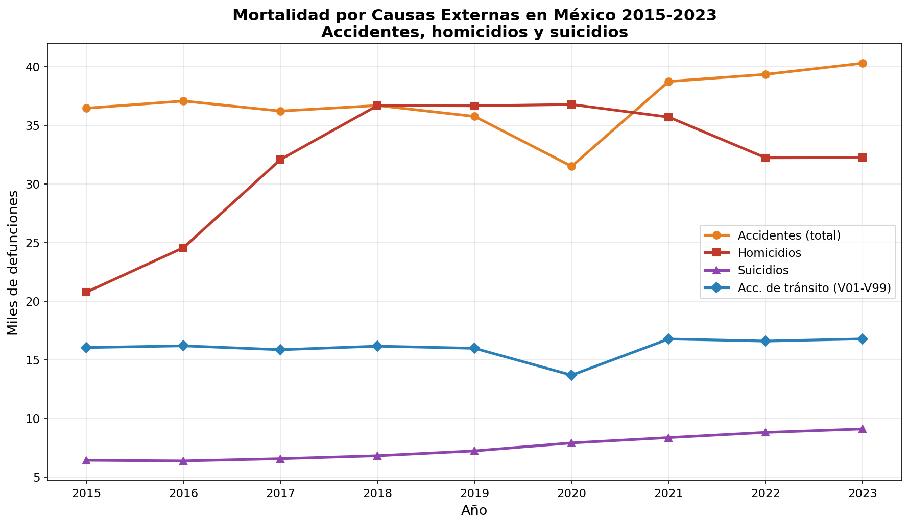
Comparativo de causas externas de mortalidad
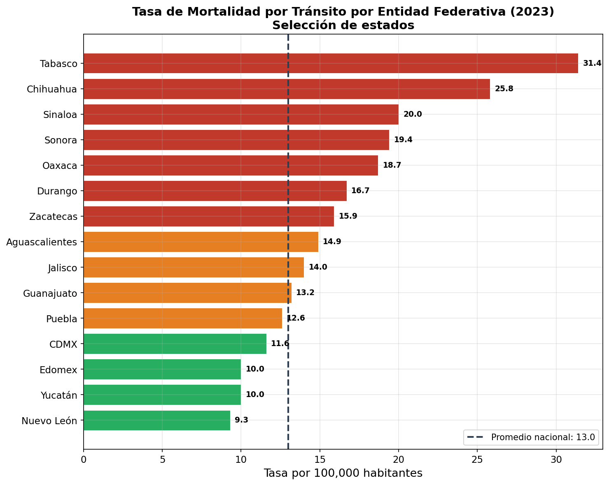
Ranking estatal de mortalidad vial 2023
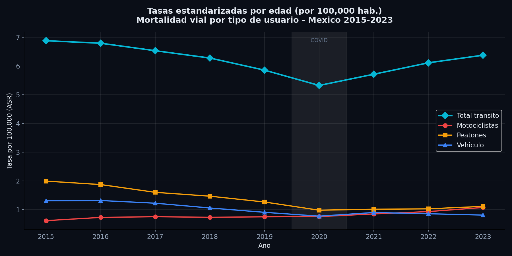
Tendencia de tasas ajustadas por edad (ASR)
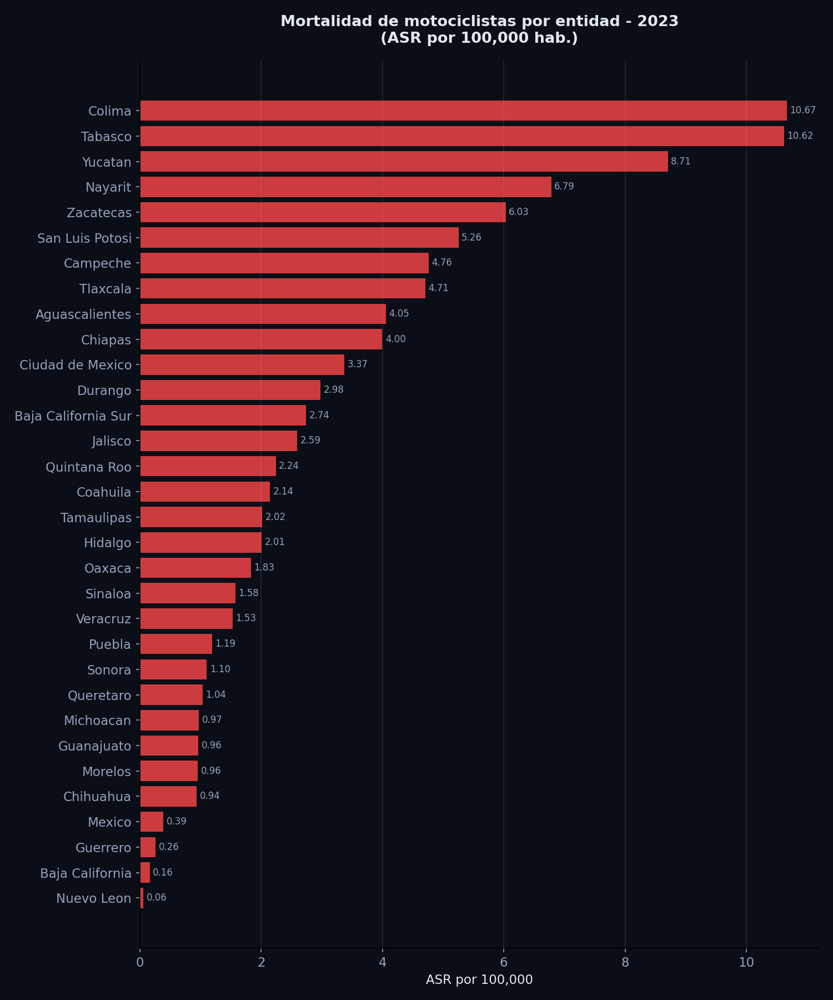
Tasas de mortalidad en motociclistas por estado 2023
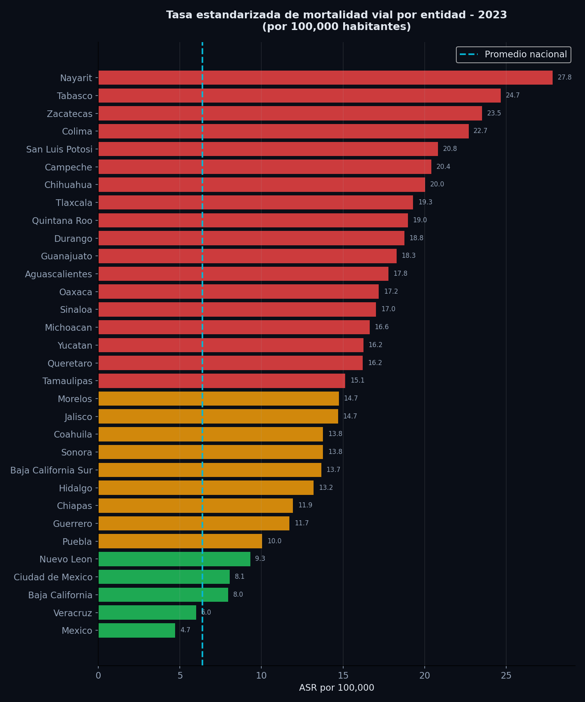
Tasas ajustadas de mortalidad vial por estado 2023
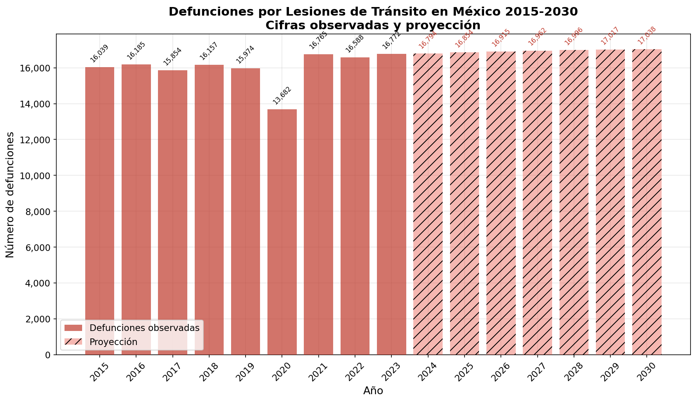
Proyección de defunciones viales a 2030
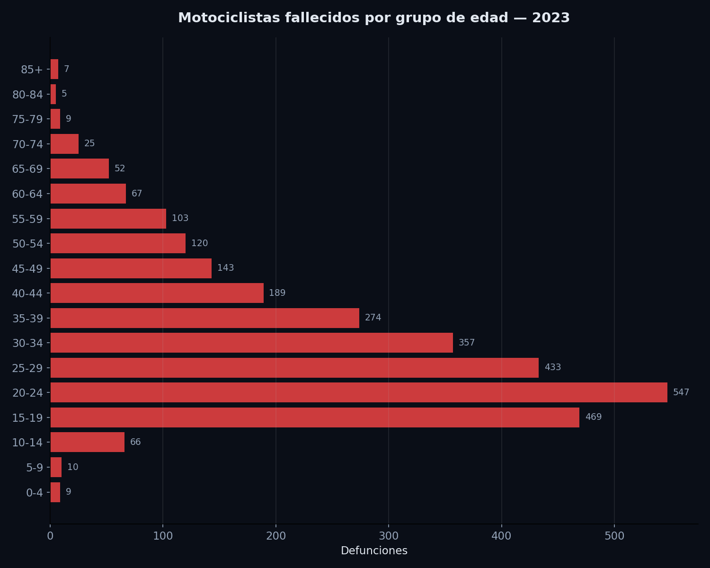
Distribución por edad — motociclistas fallecidos 2023
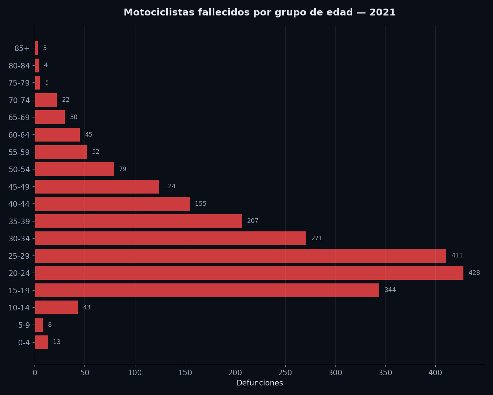
Distribución por edad — motociclistas fallecidos 2021
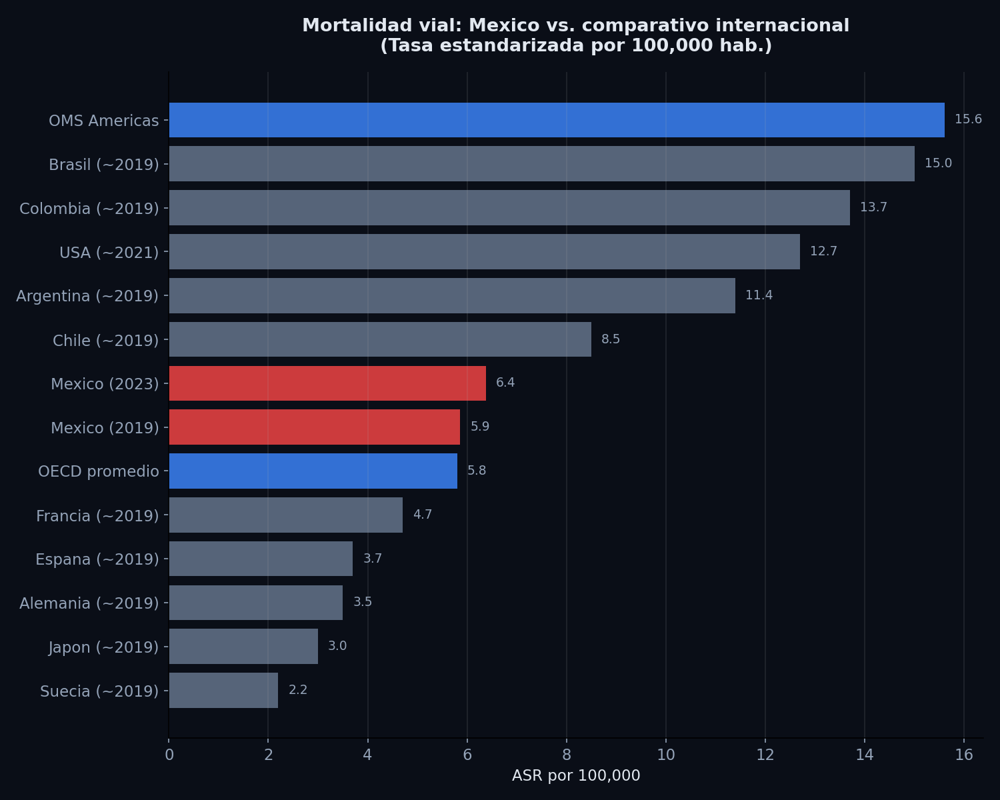
Comparativo internacional de mortalidad vial
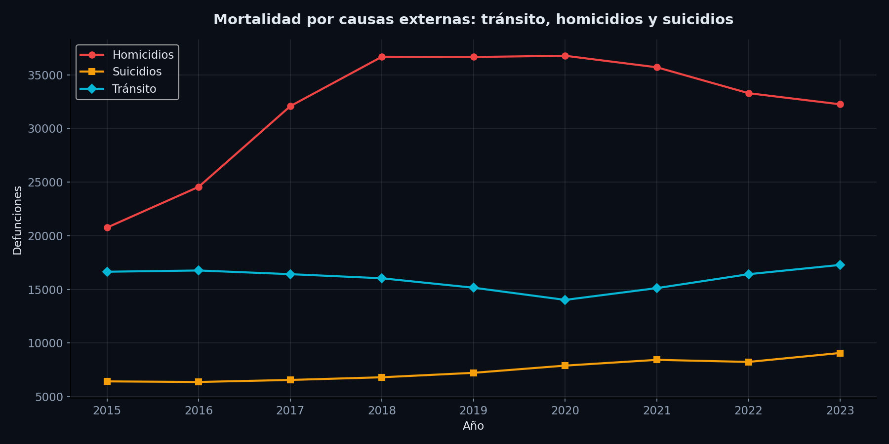
Tendencia de causas externas de mortalidad
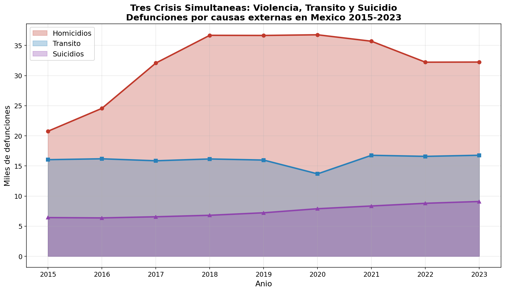
Las tres crisis de causas externas en México
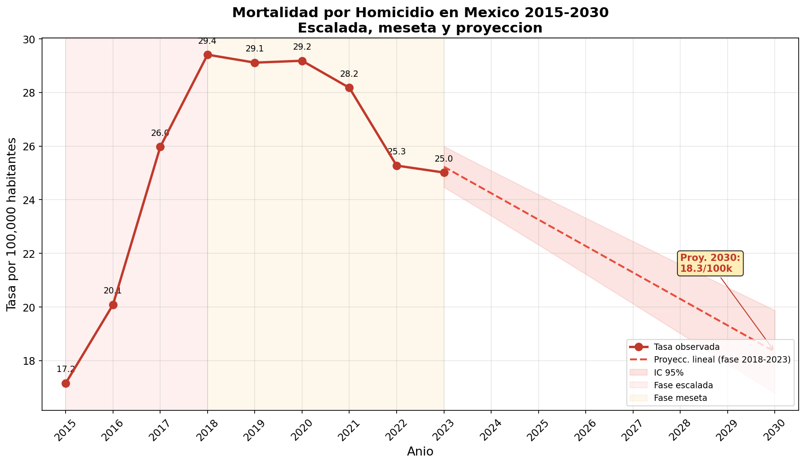
Contexto: tendencia de homicidios 2015-2030
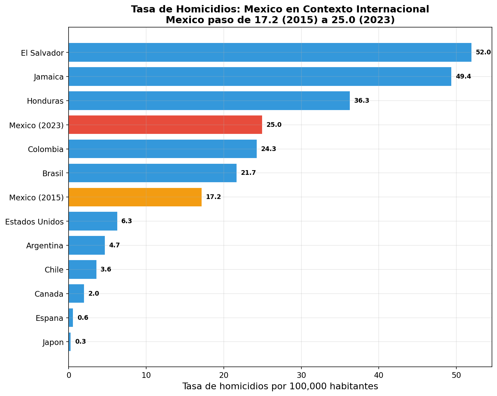
Contexto: comparativo internacional de homicidios
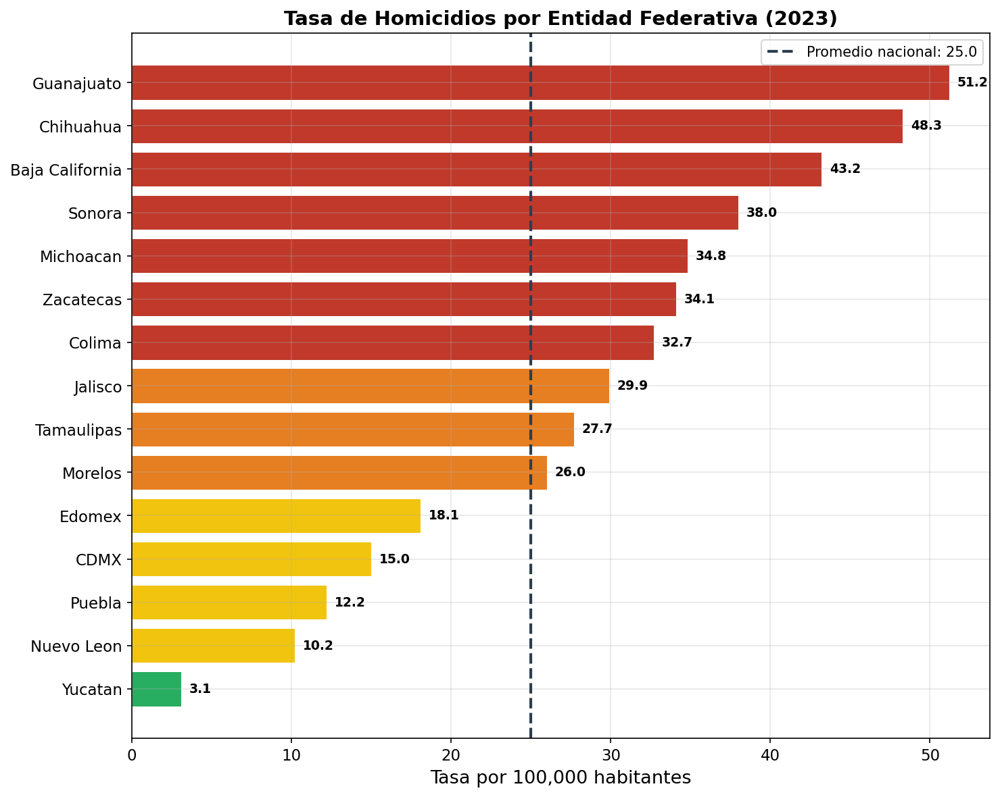
Contexto: ranking estatal de homicidios